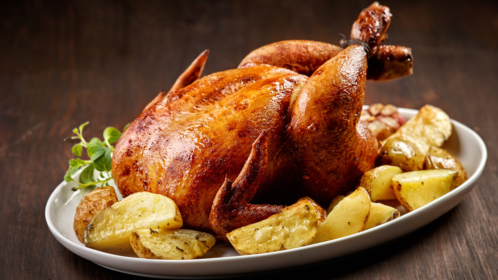

Frango Assado de Domingo
Frango assado inteiro e descomplicado
Categoria: Almoço de Domingo
Dificuldade: Fácil
Tempo de Preparo: 30min
Ingredientes
- 1 Frango inteiro (aproximadamente 2kg)
- 4 dentes de alho picados
- Suco de 1 limão
- 2 colheres de sopa de manteiga derretida
- Sal e pimenta a gosto
- Ervas frescas (alecrim, tomilho) a gosto
Modo de Preparo
1. Pré-aqueça o forno a 200°C.
2. Lave o frango e seque com papel toalha.
3. Em uma tigela, misture o alho picado, suco de limão, manteiga derretida, sal, pimenta e ervas frescas.
4. Esfregue a mistura por todo o frango, tanto por dentro quanto por fora.
5. Coloque o frango em uma assadeira e leve ao forno por aproximadamente 1 hora e 30 minutos, ou até que a pele esteja dourada e crocante e os sucos saiam claros ao espetar a parte mais grossa da coxa.
6. Deixe o frango descansar por 10 minutos antes de cortar e servir.
Utensílios:
Assadeira, Tigela, Faca, Tábua de Corte
Custo:
$$$
Cozinha: